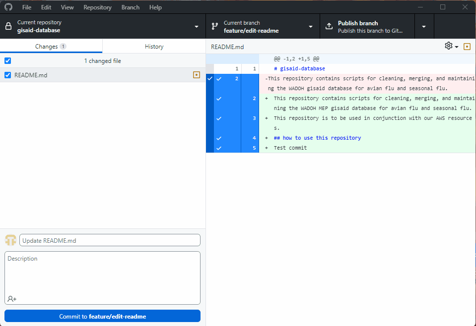

terminal
git clone <repository_url> We rely on GitHub for collaboration within and between teams. This tutorial goes over how to collaborate within the same GitHub repository if you have collaborator access to the repository. There are several ways in which you can interact with GitHub. We present two approaches using the command line and another using GitHub Desktop (a GUI).
The high-level workflow we recommend following for collaborators within a repository is:
main repo with merged PR.GitHub Desktop is a user-friendly application that simplifies version control and collaboration. This tutorial walks you through the process of collaborating on a GitHub repository using GitHub Desktop, including cloning a repository, creating branches, making changes, committing, pushing updates, and managing pull requests.
GitHub Desktop is free and can be installed on your Windows or Mac machines. Follow the installation instructions here.
main BranchOn your GitHub repository website page:
Navigate to Settings > Branches > Branch Protection Rules in the repository.
Click Add branch ruleset.
Enter a name for your ruleset.
Change Enforcement status: Active
Under Targets, click Add target:
main or if main is your default branch click Include default branch.Under Rules:
Save changes.

Open GitHub Desktop
Click the drop down arrow for Current repository > Add > Clone repository or you can click File > Clone Repository
In the dialog box:
Click Clone
Note: If you don’t have collaborator access to a repository you will not be able to clone the repository.
The repo and its contents will be located at the local path you’ve selected.
Ensure the main branch is selected in the current repository
mainMake sure that main is up to date by clicking Fetch origin
Click Branch > New Branch
Enter a descriptive name for the branch, such as feature/add-readme or bugfix/fix-typo.
Ensure that it says “Your new branch will be based on your currently checked out branch (main). main is the default branch for your repository”, then click Create Branch.
The new branch will now be checked out automatically.
###
Make changes and commit those changes to the branch
Make changes to the files and code in your repository folder
After making changes:
Stage and commit your changes:
<branch_name> to save your changes locally
To avoid conflicts, ensure your branch is up-to-date with the latest changes from main
Switch to the main branch
mainSwitch back to your branch and merge main
main as the branch to merge.main then the “Create a merge commit” button will not be clickable.main and your branch.Resolve any conflicts (if prompted).
Make any necessary commits after resolving conflicts

Open GitHub Desktop and click Branch > Create Pull Request
Fill out the PR form:
main at the top of the PR where it should say base:main <- compare:<branch_name>Submit the pull request

Collaborators may review your pull request and suggest changes.
If changes are requested:
After merging the pull request, delete the local branch to keep your work space clean.
In GitHub Desktop:
mainmain branch in GitHub DesktopSign-in to GitHub using your GitHub credentials. If you are part of WA DOH make sure to use your WA DOH is compliant Git Hub account. Every WA DOH GitHub user should have 2-factor authentication enabled.
main BranchOn your GitHub repository website page:
main or if main is your default branch click Include default branch.
Run the following command in your terminal to clone the repo:
terminal
git clone <repository_url> Navigate to the repository folder:
terminal
cd <repository_name>Branches are created to isolate development tasks. Always branch off the main branch.
main branch:terminal
git checkout main
git pull origin main terminal
git checkout -b <branch_name> Note: Branches can be called whatever you’d like. If you’d like to organize your name conventions you could consider using prefixes like feature/,bugfix/. This would look like: git checkout -b feature/add-flu-lbis
terminal
git push -u origin <branch_name> Make changes to the code/repository.
Stage the changes:
git status. This will show all the files you’ve changed.terminal
git statusterminal
git add <path/to/changed/file> # stage individual file (conservative and secure approach)terminal
git add . # stage all files at once (risky approach)git add . will stage all files with changes or deletions. This could be a security risk if you’re unaware of all the changes you’ve made on a branch.
terminal
git commit -m "docs: make changes to readme documentation to include instructions on logging in"Note: Use clear, description messages. You can follow the format of conventional commits such as <type>:<subject> for a commit message. Example: fix: fix bug in merge.py script.
Please see the Release Cycle page for more info. In summary, conventional commits can trigger an action in GitHub. For example, whenever a commit title contains the word fix: , a GitHub Action will bump up the codebase’s version number from something like 1.0.0 to 1.0.1 - We use the following key words in our commit messages:
| key word | when to use it |
|---|---|
fix: |
a commit of the type fix patches a bug in your codebase (this correlates with PATCH in Semantic Versioning). |
feat: |
a commit of the type feat introduces a new feature to the codebase (this correlates with MINOR in Semantic Versioning). |
docs: |
your commit is related to updating the documentation and not the codebase itself |
chore: |
your commit doesn’t change what the code or documentation does, it just updates something like formatting, file structure, naming conventions, etc. |
test: |
your commit is just a test commit |
mainBefore opening a PR, ensure your branch is up-to-date with the latest changes in main to ensure compatability. 1. Swith to the main branch and pull the latest changes:
terminal
git checkout main
git pull origin main terminal
git checkout <branch_name> Merge main into your branch
- Merge (safe and retains all commit history):terminal
git merge mainNote: if you’re comfortable with git and you need to keep a clean git history, consider using git rebase main. Here’s an excellent article explaining the pros and cons of merge vs rebase
Resolve conflicts, if any:
- Edit conflicting files, then stage the changes:terminal
git add <file_name> - Commit the resolved conflicts:terminal
git commit -m "chore: Resolve merge conflicts with main" terminal
git push terminal
git push origin <branch_name> main as the target.terminal
git add .
git commit -m "Address PR feedback"
git push mainterminal
git branch terminal
git branch -d <branch_name> Note: Use -D to force delete if the branch isn’t merged
main with the merged PRAfter merging your pull request, it’s important to update your local main branch to reflect the latest changes from the remote repository. 1. Switch to the main branch:
terminal
git checkout main terminal
git pull origin main